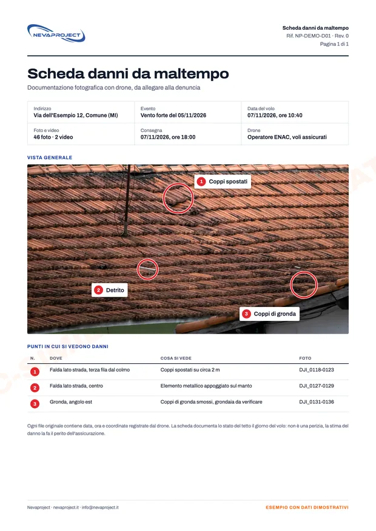
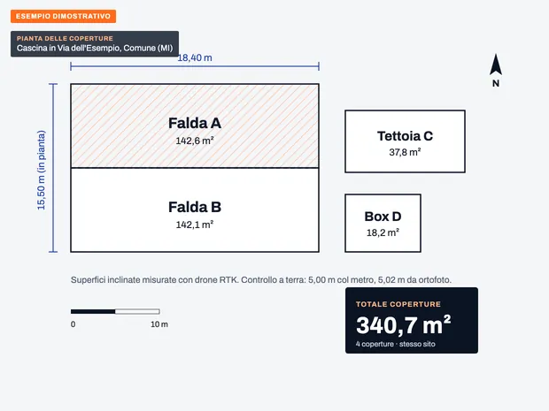
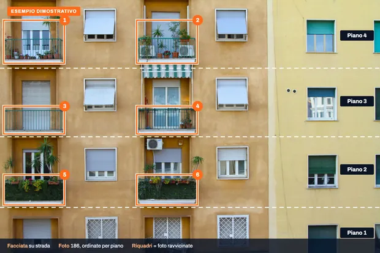

- da 80 €Grondaia Express entro 30 km dalla base
- Entro 24 orefoto e video dei danni, dal giorno del volo
- 10 annidi rilievi con drone in tutta Italia
- ENACoperatore registrato, pilota con attestato A2 e categoria Specific (STS)
Cosa fotografiamo.
Per case e villette pubblichiamo un prezzo di partenza; per condomini, capannoni, facciate e rilievi facciamo un preventivo gratuito. Il prezzo esatto lo scriviamo sempre prima del volo.
Dopo vento, grandine, neve o mareggiate
Foto e video del tetto con data, ora e posizione GPS, da allegare alla denuncia all'assicurazione.
da 220 € la casa
Prezzi e dettagliAmianto ed eternitCoperture in cemento-amianto
Foto ravvicinate di ogni falda e superfici misurate, per il tecnico che compila l'Indice di Degrado.
da 250 € a copertura
Prezzi e dettagliTetti, grondaie e caminiCom'è messo il tetto
Tegole, coppi, colmi, comignoli e grondaie fotografati da pochi metri, prima di chiamare l'impresa.
da 80 € entro 30 km
Prezzi e dettagliRilievi e misureFalde, superfici e cumuli
Ortofoto e misure con il drone RTK, per preventivi di lattonieri e imprese e per i cantieri.
preventivo gratuito
Prezzi e dettagliFacciateCornicioni, balconi e frontalini
La facciata fotografata piano per piano, senza ponteggio, per l'ingegnere o l'amministratore.
preventivo gratuito
Prezzi e dettagliGuida gratuitaCosa fotografare per l'assicurazione
Cosa documentare dopo il maltempo, da terra e in sicurezza, e cosa scrivere nella denuncia. Da stampare.
Leggere la guidaCome funziona.
Richiesta
Su WhatsApp o via email, con l'indirizzo e, se possibile, due foto da terra. Rispondiamo via email entro 24 ore nei giorni feriali, con prezzo e prime date libere.
Volo
Controlliamo l'indirizzo sulla mappa ufficiale delle zone di volo e fissiamo il giorno, con un rinvio gratuito se il meteo non lo permette.
Consegna
Foto e video su link o chiavetta, con una scheda di una pagina: indirizzo, data, ora e cosa si vede. Per i danni da maltempo, entro 24 ore dal volo.
Cosa consegniamo.
Foto con i punti segnati, misure e una scheda chiara. Clicchi su un'immagine per ingrandirla.

Scheda da allegare alla denunciaUna pagina: indirizzo, data del volo, punti danneggiati e file.

Pianta con le superficiMetri quadri di ogni copertura, misurati con il drone RTK.

Facciata per pianiOgni riquadro corrisponde a una serie di foto ravvicinate.


Esempi dimostrativi su foto d'archivio: indirizzi e dati sono a titolo illustrativo.
Prezzi.
Prezzi di partenza e finali: IVA non applicata, regime forfettario. Il preventivo arriva prima del volo, con il prezzo esatto.
| Servizio | Prezzo |
|---|---|
| Grondaia Expresscase uni e bifamiliari entro 30 km dalla base | 80 € |
| Controllo tetto, villettafoto, video e scheda di una pagina | da 190 € |
| Danni maltempo, casa o villettaconsegna entro 24 ore dal volo | da 220 € |
| Amianto ed eternit, una coperturacon le superfici misurate | da 250 € |
| Condomini, capannoni, più coperture | su preventivo |
| Facciate | su preventivo |
| Rilievi e misure con drone RTK | su preventivo |
- Stesso prezzo prima e dopo un evento meteo. Se serve, voliamo in giornata con un supplemento fisso, indicato nel preventivo.
- Se il giorno fissato piove o c'è troppo vento, spostiamo il volo senza costi.
- Pagamento con POS o link di pagamento, con fattura elettronica. Grondaia Express: pagamento sul posto.
- Le fatture sopra 77,47 € riportano la marca da bollo di 2 €.
| Distanza dalla base | Costo |
|---|---|
| fino a 60 km dalla base | inclusa |
| oltre 60 km | su preventivo |
- Se nello stesso giorno facciamo più lavori nella stessa zona, la trasferta si divide tra i clienti.
- Per le zone lontane dalla base fissiamo una giornata di lavoro quando ci sono almeno tre lavori confermati nella stessa zona.
Dove lavoriamo.
In tutta Italia, con base in provincia di Milano. Vicino alla base la trasferta è inclusa; per le zone lontane organizziamo giornate con più lavori, così la trasferta si divide.
Ogni lavoro è verificato prima del preventivo sulle zone di volo D-Flight e secondo le regole ENAC. Dove serve un'autorizzazione la chiediamo noi, e nel preventivo indichiamo i tempi. Nelle zone chiuse da Protezione Civile, Comune o ENAC non si vola.
Chi vola.
Dieci anni di voli
Oltre 3.000 impianti fotovoltaici ispezionati in tutta Italia, per aziende dell'energia e studi tecnici.
In regola con ENAC
Operatore registrato, pilota con attestato A2 e categoria Specific (STS). Ogni lavoro è verificato prima sulle zone di volo D-Flight e secondo le regole ENAC.
Voli assicurati
Polizza di responsabilità civile per i voli con drone.
Domande frequenti.
Quanto costa un'ispezione con il drone?
Per una casa si parte da 80 € per la Grondaia Express entro 30 km dalla nostra base, da 190 € per il controllo completo e da 220 € per i danni da maltempo. Per condomini, capannoni, facciate e rilievi facciamo un preventivo gratuito. Il prezzo esatto lo scriviamo sempre prima del volo.
In quanto tempo potete venire?
Vicino alla base spesso bastano pochi giorni. Con un supplemento voliamo in giornata, quando il calendario lo permette. Dove il volo richiede un'autorizzazione i tempi sono più lunghi: li indichiamo nel preventivo.
Bisogna essere presenti durante il volo?
Serve qualcuno che ci indichi l'immobile all'arrivo. Il volo si fa dall'esterno e nessuno deve salire su scale o tetti. Per la Grondaia Express il pagamento è sul posto.
E se piove o c'è vento?
Con pioggia o vento forte non si vola: spostiamo la data senza costi.
Le foto valgono per l'assicurazione?
Sono foto e video con data, ora e posizione GPS registrate in ogni file, da allegare alla denuncia. Non sono una perizia: la stima del danno la fa il perito dell'assicurazione.
Fate anche le riparazioni?
No. Documentiamo lo stato dell'immobile; le riparazioni le fa l'impresa scelta dal cliente, che con le nostre foto può preparare il preventivo senza salire.
Dove lavorate?
In tutta Italia, con base in provincia di Milano. Per le zone lontane organizziamo una giornata di lavoro quando ci sono almeno tre richieste confermate nella stessa zona.